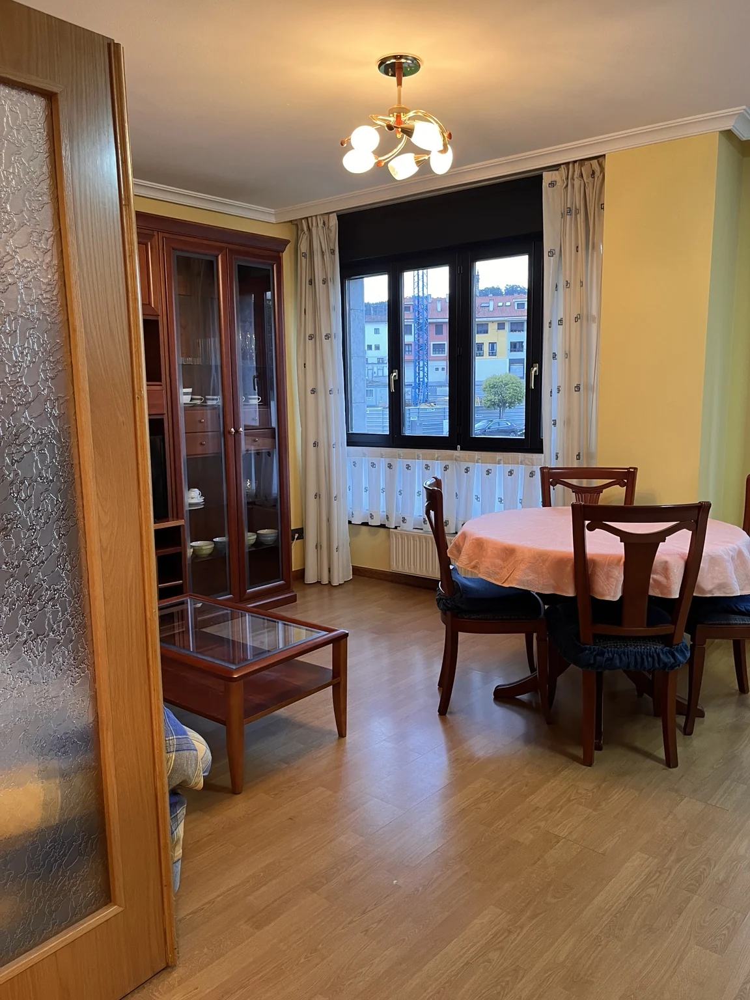

← Alojamientos
COLUNGA · APARTAMENTOEspacio para
Espacio para
disfrutar juntos.
Desayunos sin prisa y días entre la costa y el Sueve.
Salón comedorCocina independienteCama doble y camas individuales
Tu apartamento en Colunga
Imagina tus días aquí
Elige las fechas para tu escapada. Hernán te confirmará disponibilidad y precio personalmente.
Explorar la viviendaColunga
Disponibilidad por confirmar¿Cuándo te gustaría venir?
Al consultar, cuéntanos cuántos vendréis para confirmar que la vivienda encaja con vuestra estancia.
Consultar fechas por WhatsApp ↗Consulta disponibilidad y precio para tus fechas. Tu estancia quedará reservada cuando recibas la confirmación.
Una visita en primera personaAntes de llegar,
Antes de llegar,
siéntete aquí.
Abre la puerta y descubre los espacios a tu ritmo. Elige una primera mirada o acompáñanos en el recorrido completo.
2 min 09 s · Sin audio
Ver las 20 fotos ↓Tu estancia en Colunga
Un lugar para volver al final del día.
Desliza las fotos o toca una imagen para ampliarla.
01 / Una primera miradaLas 20 fotosSalón · cocina · dormitorios · baños+
02 / DescansoTu momento de descansarCama doble · camas individuales+
- Un dormitorio con cama doble.
- Otro dormitorio con dos camas individuales.
- Luz natural y espacio para desconectar.
03 / A tu ritmoDesayunos sin mirar el relojCocina · comedor+
- Cocina independiente con mesa.
- Horno, microondas, frigorífico y lavadora.
- Salón comedor para compartir la sobremesa.
04 / ComodidadUn respiro después de la playaDucha · bañera+
- Un baño con ducha.
- Otro baño con bañera, lavabo y bidé.